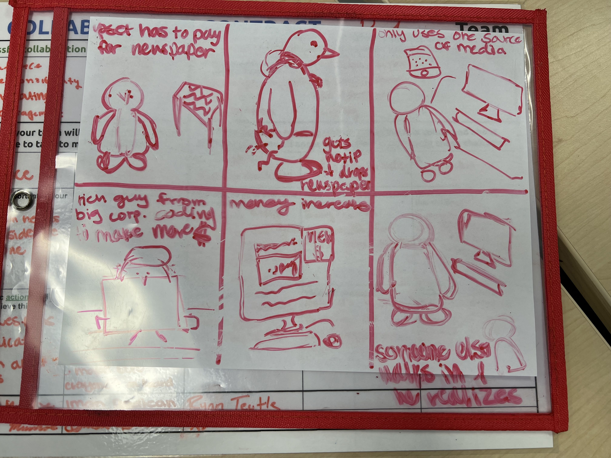
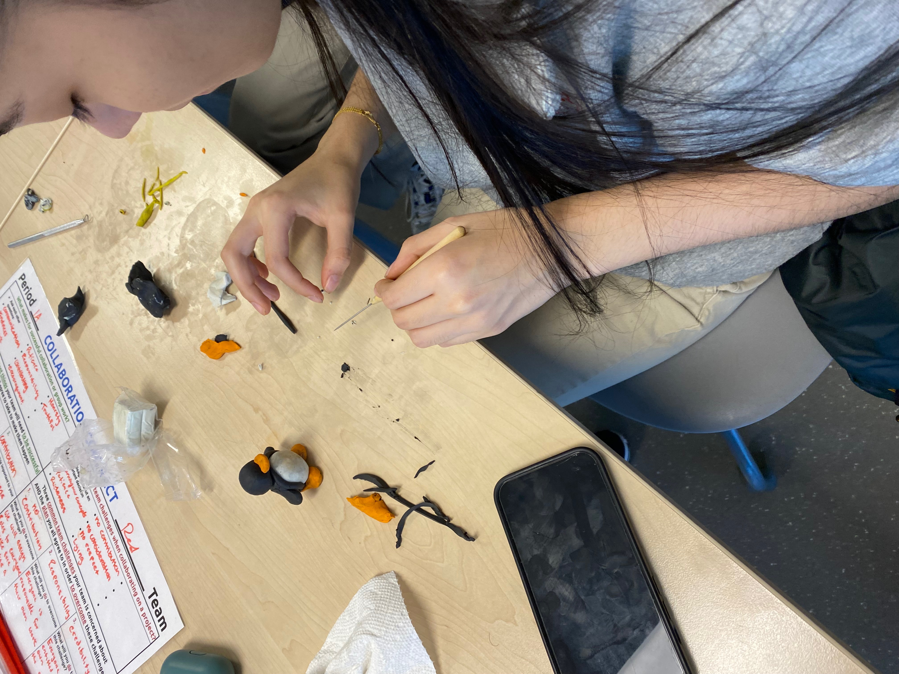
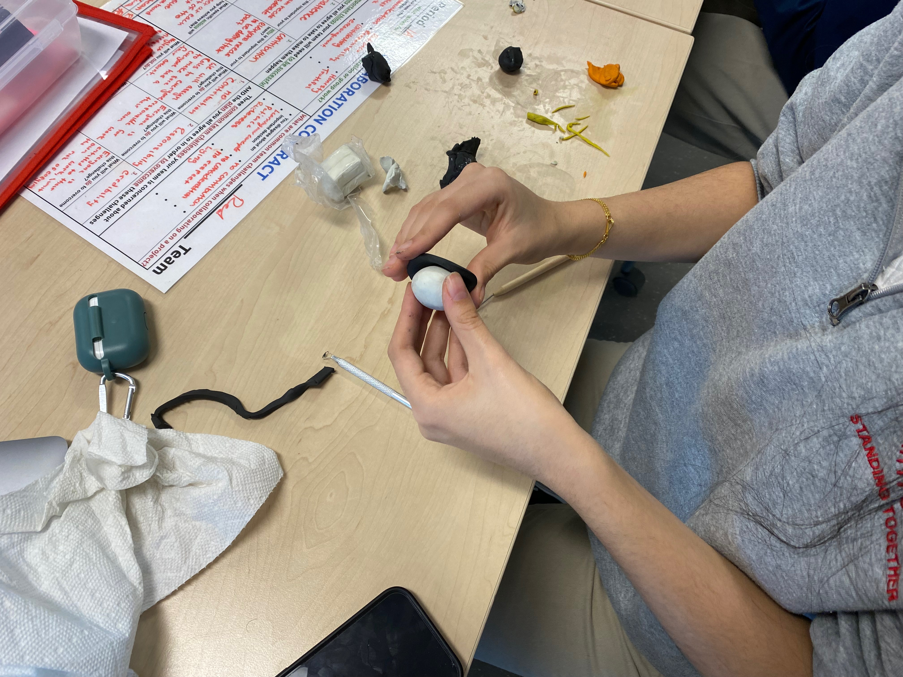
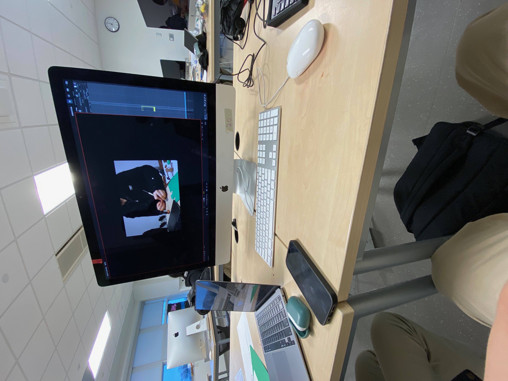
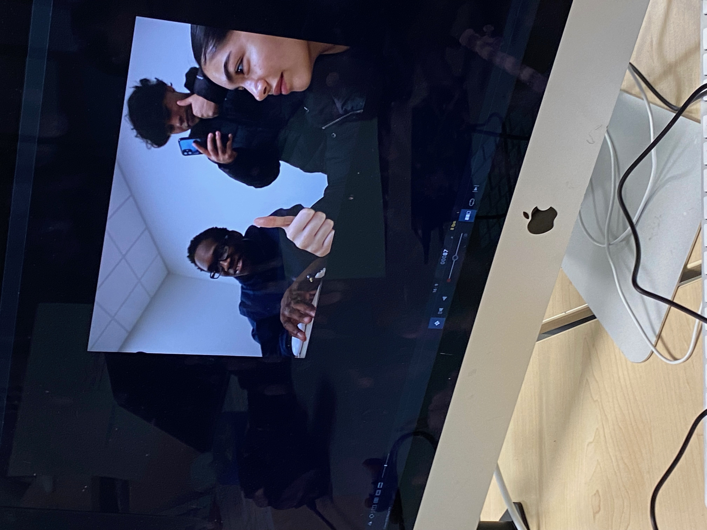
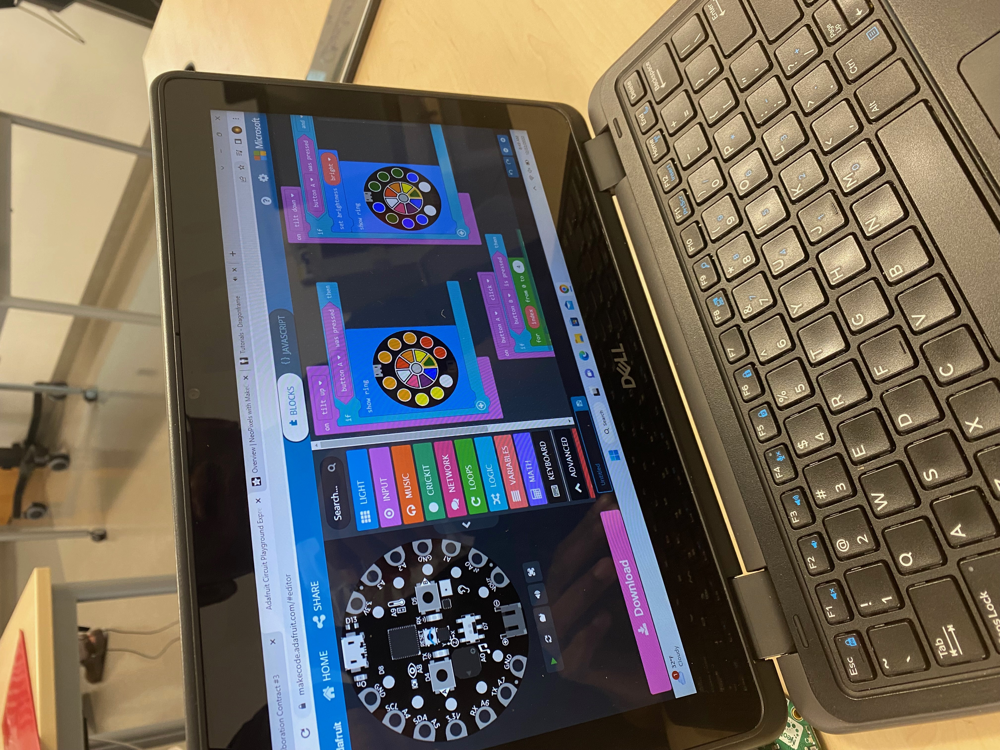

Description:
We created a stop motion animation on the causes and effects of media bias. The storyboard can be viewed below. The story starts with a penguin upset that he has to pay for a newspaper. He then realizes that he can access the news on the internet. After browsing it for a while, he sticks with that one news source. We also show other penguins doing the same with other news sources. They eventually get into a fight about what they've seen on the news. This fight shows that consuming only one source of media can lead to bias and conflict between people.
Physical pieces:
We made all of our characters out of clay, and we made the backgrounds out of paper. We used clay because it is very easy to move around, which made it easier for the stop motion. We made the backgrounds out of paper because they were quick to draw/create.
 
Dragonframe:
The software that we used to create our stop-motion animation is called dragonframe. It took the each picture for us, let us edit the fps, the length of each frame, onion-skin the frames, and more.
 MakeCode:
We used a software called MakeCode in order to change the lighting during each scene. We used it to show the passage of time. As it got closer and closer to night time, we made the reflection of the computer screen appear brighter and brighter by coding the light to become more "purple" (or green/red depending on the scene) 
Reflection:
Overall, the project was very fun to make. We were able to learn from it, but also teach others with our knowledge. Below are some behind the scene pictures.